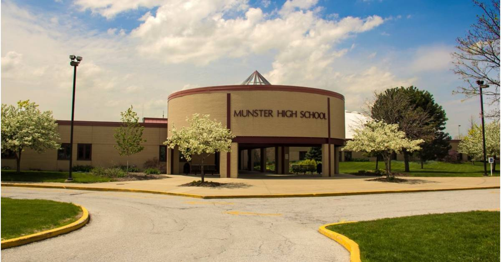

About Me
My name is Bryce Gelarden and I am a second-year undergraduate student at Indiana University from Munster, Indiana.
Currently, I am pursuing an interdisciplinary education in Operations Management, Data Science, Statistics, and Decision Science.
My journey is taking shape through research, problem-solving, and continuously asking questions at the intersection of these fields.
I strive to always lead with integrity, to listen before speaking, and to set a positive example for those around me.
Education
Indiana University - Bloomington
2024-2028Bachelor of Science in Business, BSB - Operations Management
Bachelor of Science, BS - Data Science
*Minors: Statistics, Decision Science
Campus Involvements
- Ostrom Workshop, Data Strategy Lab
- BUS-P 454: Supply Chain Consulting Practicum
- Kelley-to-Kelley Mentor Program
- Supply Chain & Operations Management Association (SCOMA)
- Chi Phi Fraternity, Iota Delta Chapter
Coursework @ IU
Spring 2026
BUS-K 353: Business Analytics & Modeling, 3 Cr.
DSCI-D 321: Data Strucutures and Representation, 3 Cr.
STAT-S 350: Statistical Inference I, 3 Cr.
BUS-A 306: Management Accounting and Analysis, 3 Cr.
BUS-G 202: Business, Government, and Society, 3 Cr.
ILS-Z 221: Intelligence Analytics, 3 Cr.
BUS-D 271: Doing Business in Asia (Global Business Analysis), 1.5 Cr.
BUS-T 375: Kelley Compass III, 1 Cr.
Fall 2025
CSCI-A 310: Problem Solving Using Data, 3 Cr.
MATH-E 265: Probability and Statistics for Data Science, 3 Cr.
BUS-K 303: Technology and Business Analytics, 3 Cr.
BUS-A 304: Financial Reporting and Analysis, 3 Cr.
ILS-Z 410: Social and Ethical Impacts of Big Data, 3 Cr.
BUS-L 201: Legal Environment of Business, 3 Cr.
BUS-T 275: Kelley Compass II, 1.5 Cr.
Spring 2025
BUS-K 201: Foundations of Business Information Systems and Decision Making, 3 Cr.
CSCI-C 241: Discrete Structures and Mathematics for Computer Science, 3 Cr.
MATH-E 201: Linear Algebra for Data Science, 3 Cr.
BUS-C 204: Business Writing, 3 Cr.
BUS-A 100: Introductory Accounting Principles and Analysis, 1 Cr.
Fall 2024
ECON-B 251: Fundamentals of Economics for Business I, 3 Cr.
CSCI-C 200: Introduction to Computers and Programming, 4 Cr.
INFO-I 123: Data Fluency, 3 Cr.
BUS-C 104: Business Presentations, 3 Cr.
BUS-X 170: How Business Works, 3 Cr.
BUS-D 270: Global Business Environments & Analysis, 1.5 Cr.
BUS-T 175: Kelley Compass I, 1.5 Cr.
Other Credits Earned (High School)
Math
MATH-M 211: Calculus I
STAT-S 300: Introduction to Applied Statistical Methods
English
ENG-L 202: Literary Interpretation
ENG-W 131: Reading, Writing, + Inquiry
ENG-X 101: Pre-Composition
Science
BIOL-L 112: Foundations of Biology
BIOL-L 104: Introductory Biology
SPEA-E 183: Environment and People
Social Sciences
ECON-E 201: Introduction to Microeconomics
PSY-P 101: Introduction to Psychology
Foreign Language
HISP-S 250: Second-Year Spanish II
HISP-S 200: Second-Year Spanish I
HISP-S 150: Elementary Spanish II
HISP-S 100: Elementary Spanish I
Other
CSCI-C 102: Great Ideas in Computing
COLL-P 155: Public Oral Communication / Public Speaking
Before Coming to IU...
Born and raised in Munster, Indiana, I am a proud graduate of Munster High School and remain grateful for the community that shaped me.

Leadership & Achievements:
- Varsity Baseball: Captain, All-State
- Speech and Debate: 2x State Champion (2023, 2024)
- AP Scholar w/ Distinction
- Jim and Betty Dye Scholar